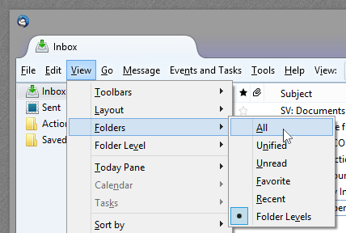

Introduction
Sometimes, too much unread email can be stressful to look at.
Folder Levels lets you get rid of the distractions and see only the mail that matters to you at the moment. You can decide exactly which folders are visible at any time, based on their relative importance to you and what you are currently trying to accomplish.
Sometimes you want get work done.
And sometimes you want to catch up on your favorite mailing lists.
Usage
Assign levels to folders
To assign a level to a folder, right click the folder to display the folder's context menu. From the Folder Level menu, choose the appropriate level.
How to choose levels for your folders
Start by picking a folder or two that are most important to you, and assign these as level 1. These should be folders you want to see in your list not matter how focused you are on something else. These folders will always be displayed no matter what level you are viewing later.
Next, pick some more folders for level 2. These might be folders with notifications or mailing lists that make you happy.
Assign lower levels to folders that have mail that you eventually need to see, but where the messages can wait for a time when you're ready.
You can categorize your folders using up to 9 levels. Try things out and see what works for you.
Change which folders are displayed based on their level
Once you have assigned some levels to your folders, you can choose which levels you want to be displayed. When displaying at level 1, only level 1 folders are displayed. When displaying at level 2, both level 2 and level 1 folders are displayed. When displaying at level 5, all folders with levels of 5 or below will be displayed.
On the main menu, choose View - Folder Levels, and then select the appropriate level.
Alternatively, you can press Alt + 1 to show only level 1 folders, Alt + 2 to show level 2 (and below), and so on.
Folders that are not assigned a level will never be displayed when the Folder Levels mode is active, so if your folders all seem to disappear, make sure you have assigned some levels first.
Only show folders with unread messages
Folder Levels lets you hide folders that don't contain any unread messages. To show only unread folders, choose View - Folder Levels - Unread from the main menu, or simply press "u" on the keyboard.
Return to the normal folder mode
To return to the normal folder view, just select View - Folders - All from the main menu.

Keyboard Shortcuts
- Alt + #: Only show folders at or below the provided number
- u: Toggle whether only unread folders are displayed
- Alt-v-f-a: Return to the default folder view mode (this is the default Thunderbird key sequence)
License
Folder Levels is subject to the terms of the Mozilla Public License, which means it is free. You can get the source code at GitHub.